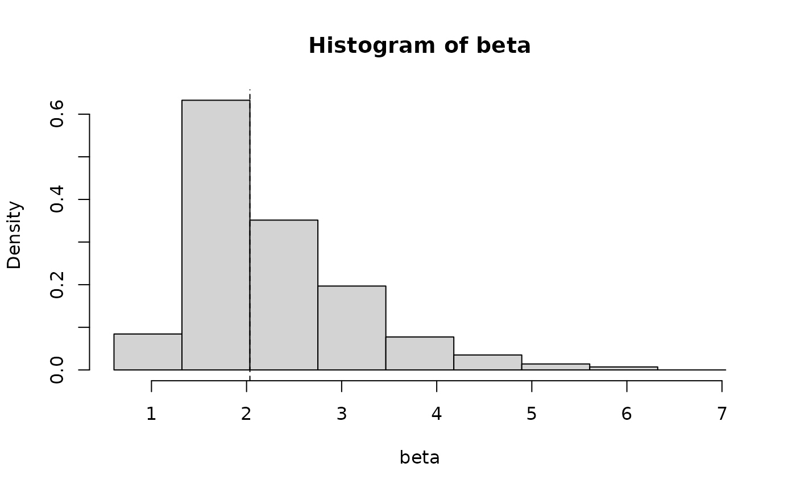

fwb() implements the fractional (random) weighted bootstrap, also known as the Bayesian bootstrap. Rather than resampling units to include in bootstrap samples, weights are drawn to be applied to a weighted estimator.
Arguments
- data
the dataset used to compute the statistic
- statistic
a function, which, when applied to
data, returns a vector containing the statistic(s) of interest. The function should take at least two arguments; the first argument should correspond to the dataset and the second argument should correspond to a vector of weights. Any further arguments can be passed tostatisticthrough the...argument.- R
the number of bootstrap replicates. Default is 999 but more is always better. For the percentile bootstrap confidence interval to be exact, it can be beneficial to use one less than a multiple of 100.
- cluster
optional; a vector containing cluster membership. If supplied, will run the cluster bootstrap. See Details. Evaluated first in
dataand then in the global environment.- simple
logical; ifTRUE, weights will be generated on-the-fly in each bootstrap replication; ifFALSE, all weights will be generated at once and then supplied tostatistic. Cannot beTRUEwhenwtype = "multinom". The default (NULL) sets toFALSEifwtype = "multinom"and toTRUEotherwise.- wtype
string; the type of weights to use. Allowable options include
"exp"(the default),"pois","multinom", and"mammen". See Details. Seeset_fwb_wtype()to set a global default.- strata
optional; a vector containing stratum membership for stratified bootstrapping. If supplied, will essentially perform a separate bootstrap within each level of
strata. This does not affect results whenwtype = "poisson".- drop0
logical; whenwtypeis"multinom"or"poisson", whether to drop units that are given weights of 0 from the dataset and weights supplied tostatisticin each iteration. Ignored for otherwtypes because they don't produce 0 weights. Default isFALSE.- verbose
logical; whether to display a progress bar.- cl
a cluster object created by
parallel::makeCluster(), an integer to indicate the number of child-processes (integer values are ignored on Windows) for parallel evaluations, or the string"future"to use afuturebackend. See theclargument ofpbapply::pblapply()for details. IfNULL, no parallelization will take place. Seevignette("fwb-rep")for details.- ...
other arguments passed to
statistic.- x
an
fwbobject; the output of a call tofwb().- digits
the number of significant digits to print
- index
the index or indices of the position of the quantity of interest in
x$t0if more than one was specified infwb(). Default is to print all quantities.
Value
An fwb object, which also inherits from boot, with the following components:
- t0
The observed value of
statisticapplied todatawith uniform weights.- t
A matrix with
Rrows, each of which is a bootstrap replicate of the result of callingstatistic.- R
The value of
Ras passed tofwb().- data
The
dataas passed tofwb().- seed
The value of
.Random.seedjust prior to generating the weights (after the first call tostatisticwith uniform weights).- statistic
The function
statisticas passed tofwb().- call
The original call to
fwb().- cluster
The vector passed to
cluster, if any.- strata
The vector passed to
strata, if any.- wtype
The type of weights used as determined by the
wtypeargument.
fwb objects have coef() and vcov() methods, which extract the t0 component and covariance of the t components, respectively.
Details
fwb() implements the fractional weighted bootstrap and is meant to function as a drop-in for boot::boot(., stype = "f") (i.e., the usual bootstrap but with frequency weights representing the number of times each unit is drawn). In each bootstrap replication, when wtype = "exp" (the default), the weights are sampled from independent exponential distributions with rate parameter 1 and then normalized to have a mean of 1, equivalent to drawing the weights from a Dirichlet distribution. Other weights are allowed as determined by the wtype argument (see below for details). The function supplied to statistic must incorporate the weights to compute a weighted statistic. For example, if the output is a regression coefficient, the weights supplied to the w argument of statistic should be supplied to the weights argument of lm(). These weights should be used any time frequency weights would be, since they are meant to function like frequency weights (which, in the case of the traditional bootstrap, would be integers). Unfortunately, there is no way for fwb() to know whether you are using the weights correctly, so care should be taken to ensure weights are correctly incorporated into the estimator.
When fitting binomial regression models (e.g., logistic) using glm(), it may be useful to change the family to a "quasi" variety (e.g., quasibinomial()) to avoid a spurious warning about "non-integer #successes".
The cluster bootstrap can be requested by supplying a vector of cluster membership to cluster. Rather than generating a weight for each unit, a weight is generated for each cluster and then applied to all units in that cluster.
Bootstrapping can be performed within strata by supplying a vector of stratum membership to strata. This essentially rescales the weights within each stratum to have a mean of 1, ensuring that the sum of weights in each stratum is equal to the stratum size. For multinomial weights, using strata is equivalent to drawing samples with replacement from each stratum. Strata do not affect bootstrapping when using Poisson weights.
Ideally, statistic should not involve a random element, or else it will not be straightforward to replicate the bootstrap results using the seed included in the output object. Setting a seed using set.seed() is always advised. See vignette("fwb-rep") for details.
The print() method displays the value of the statistics, the bias (the difference between the statistic and the mean of its bootstrap distribution), and the standard error (the standard deviation of the bootstrap distribution).
Weight types
Different types of weights can be supplied to the wtype argument. A global default can be set using set_fwb_wtype(). The allowable weight types are described below.
"exp"Draws weights from an exponential distribution with rate parameter 1 using
rexp(). These weights are the usual "Bayesian bootstrap" weights described in Xu et al. (2020). They are equivalent to drawing weights from a uniform Dirichlet distribution, which is what gives these weights the interpretation of a Bayesian prior. The weights are scaled to have a mean of 1 within each stratum (or in the full sample ifstratais not supplied)."multinom"Draws integer weights using
sample(), which samples unit indices with replacement and uses the tabulation of the indices as frequency weights. This is equivalent to drawing weights from a multinomial distribution. Usingwtype = "multinom"is the same as usingboot::boot(., stype = "f")instead offwb()(i.e., the resulting estimates will be identical). Whenstratais supplied, unit indices are drawn with replacement within each stratum so that the sum of the weights in each stratum is equal to the stratum size."poisson"Draws integer weights from a Poisson distribution with 1 degree of freedom using
rpois(). This is an alternative to the multinomial weights that yields similar estimates (especially as the sample size grows) but can be faster. Notestratais ignored when using"poisson"."mammen"Draws weights from a modification of the distribution described by Mammen (1983) for use in the wild bootstrap. These positive weights have a mean, variance, and skewness of 1, making them second-order accurate (in contrast to the usual exponential weights, which are only first-order accurate). The weights \(w\) are drawn such that \(P(w=(3+\sqrt{5})/2)=(\sqrt{5}-1)/2\sqrt{5}\) and \(P(w=(3-\sqrt{5})/2)=(\sqrt{5}+1)/2\sqrt{5}\). The weights are scaled to have a mean of 1 within each stratum (or in the full sample if
stratais not supplied).
"exp" is the default due to it being the formulation described in Xu et al. (2020) and in the most formulations of the Bayesian bootstrap; it should be used if one wants to remain in line with these guidelines or to maintain a Bayesian flavor to the analysis, whereas "mammen" might be preferred for its frequentist operating characteristics, though its performance has not been studied in this context. "multinom" and "poisson" should only be used for comparison purposes.
References
Mammen, E. (1993). Bootstrap and Wild Bootstrap for High Dimensional Linear Models. The Annals of Statistics, 21(1). doi:10.1214/aos/1176349025
Rubin, D. B. (1981). The Bayesian Bootstrap. The Annals of Statistics, 9(1), 130–134. doi:10.1214/aos/1176345338
Xu, L., Gotwalt, C., Hong, Y., King, C. B., & Meeker, W. Q. (2020). Applications of the Fractional-Random-Weight Bootstrap. The American Statistician, 74(4), 345–358. doi:10.1080/00031305.2020.1731599
The use of the "mammen" formulation of the bootstrap weights was suggested by Lihua Lei here.
See also
fwb.ci() for calculating confidence intervals; summary.fwb() for displaying output in a clean way; plot.fwb() for plotting the bootstrap distributions; vcovFWB() for estimating the covariance matrix of estimates using the FWB; set_fwb_wtype() for an example of using weights other than the default exponential weights; boot::boot() for the traditional bootstrap.
See vignette("fwb-rep") for information on reproducibility.
Examples
# Performing a Weibull analysis of the Bearing Cage
# failure data as done in Xu et al. (2020)
set.seed(123, "L'Ecuyer-CMRG")
data("bearingcage")
weibull_est <- function(data, w) {
fit <- survival::survreg(survival::Surv(hours, failure) ~ 1,
data = data, weights = w,
dist = "weibull")
c(eta = unname(exp(coef(fit))), beta = 1/fit$scale)
}
boot_est <- fwb(bearingcage, statistic = weibull_est,
R = 199, verbose = FALSE)
boot_est
#> FRACTIONAL WEIGHTED BOOTSTRAP
#>
#> Call:
#> fwb(data = bearingcage, statistic = weibull_est, R = 199, verbose = FALSE)
#>
#> Bootstrap Statistics :
#> original bias std. error
#> eta 11792.178173 6576.7323747 2.102547e+04
#> beta 2.035319 0.2416885 8.668478e-01
#Get standard errors and CIs; uses bias-corrected
#percentile CI by default
summary(boot_est, ci.type = "bc")
#> Estimate Std. Error CI 2.5 % CI 97.5 %
#> eta 1.18e+04 2.10e+04 3.08e+03 6.83e+04
#> beta 2.04e+00 8.67e-01 1.23e+00 4.66e+00
#Plot statistic distributions
plot(boot_est, index = "beta", type = "hist")
